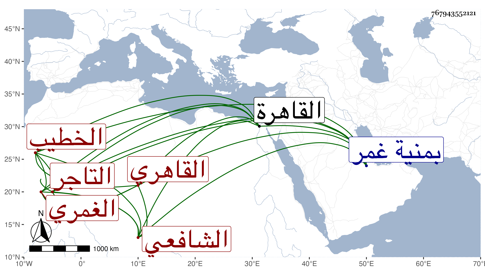

0902Sakhawi.DawLamic.ITO20230111-ara1.EIS1600.767943552121
Biography ID: 767943552121
1022
علي بن محمد بن عبد الحق نور الدين الغمري ثم القاهري الشافعي الخطيب التاجر أخو أحمد الماضي ويعرف بابن عبد الحق. ولد سنة سبع عشرة وثمانمائة بمنية غمر ونشأ بها فقرأ القرآن وتعانى البز كسلفه وصحب الشيخ محمد الغمري وتميز عنده بحيث جعله أحد الأوصياء على ولده وخطب بجامعه بالقاهرة دهرا ، وحج غير مرة وجاور في بعضها واشتغل يسيرا وسمع على شيخنا وغيره وكذا لازمني في سماع القول البديع وغيره من تآليفي وغيرها وحصل كتبا بخط ابن العماد كالبخاري والشفا وأتقنهما وبخط غيره كالترغيب للمنذري والدميري والقول البديع وجملة ، وكان فيه بر وخير ورقة ثم تضعضع حاله جدا وباع الكتب المشار إليها بعد وقفه إياها ولم يسعد بذلك بل لم يزل في افتقار واحتياج إلى التعرض للأخذ ثم فلج ودام أشهرا منقطعا ببيت بجوار جامع الغمري إلى أن حول منه لبيت بالقرب من خوخة سوق أمير الجيوش فلم يلبث أن مات في أوائل ذي القعدة سنة تسعين ودفن بتربة القرا سنقرية وخلف ذكرا وأنثى عوضهم الله الجنة .
